Informatica PowerCenter对接FusionInsight HD¶
适用场景¶
Informatica PowerCenter 10.2.0 ↔ FusionInsight HD V100R002C80SPC200 (HDFS/Hive)
Informatica PowerCenter 10.2.0 ↔ FusionInsight HD 6.5 (HDFS/Hive)
环境信息¶
- Informatica Server 10.2.0 Linux
- Informatica PowerCenter Client 10.2.0
- Oracle database 11g
- FusionInsight HD 客户端
部署方案¶
- 一台Linux服务器，部署Informatica Server，并安装FusionInsight HD客户端
- 一台Windows机器，安装Informatica PowerCenter Client
环境准备¶
安装FusionInsight HD客户端¶
-
安装FusionInsight客户端，安装目录为/opt/hadoopclient
-
通过FusionInsight HD的管理页面创建一个“人机”用户，具体请参见《FusionInsight HD管理员指南》的 创建用户 章节。例如，创建用户developuser，并赋予HDFS,Hive所有权限，下载对应的秘钥文件,将krb5.confh和user.keytab文件上传到客户端节点的
/opt/目录下
在Linux上安装Oracle database 以及 Informatica Server¶
-
创建oracle 用户，安装oracle 数据库
-
创建infa用户，使用
sqlplus / as sysdba登录至oracle数据库中，执行以下sql语句create tablespace rep_data datafile '/u01/app/oracle/oradata/orcl/rep_data_01.dbf' size 512m ; create user pwc_user identified by pwc_user default tablespace rep_data temporary tablespace temp; create user mdl_user identified by mdl_user default tablespace rep_data temporary tablespace temp; create user domain_user identified by domain_user default tablespace rep_data temporary tablespace temp; grant dba to domain_user,pwc_user,mdl_user; -
获取Informatica Server安装包并上传至节点,解压安装包之后，执行
./install.sh，根据提示进行安装,这里安装目录为/home/infa/Informatica/10.2.0。 -
安装完成后，Informatica Server会自行启动，在浏览器输入ip:6008端口，打开Administrator 管理界面，输入安装时设置的用户名密码进行登录。也可以通过以下命令启动或停止Informatica Server。
su - infa /home/infa/Informatica/10.2.0/tomcat/bin/infaservice.sh startup /home/infa/Informatica/10.2.0/tomcat/bin/infaservice.sh shutdown说明：如果使用非infa用户启动或者停止Informatica Server之后，会导致
/home/infa/Informatica/10.2.0目录下一些文件的所有者发生变化，导致下一次启动或者停止失败。可执行 chown -R infa:oinstall /home/infa/Informatica/10.2.0 修复。
Informatica Server配置¶
-
创建PowerCenter 存储库
- 在管理界面，domain下右键新建一个PowerCenter 存储库
 - 指定名称等信息，下一步
- 指定名称等信息，下一步 - 指定数据库信息，完成
- 指定数据库信息，完成 - 点击右上角按钮启用存储库，并为存储库创建内容
- 点击右上角按钮启用存储库，并为存储库创建内容
- 在存储库属性中，修改操作类型为普通，并重启服务 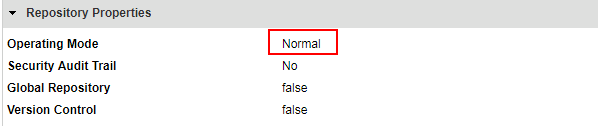
-
创建PowerCenter 数据集成服务
- 在管理界面，domain下右键新建一个PowerCenter集成服务
 - 指定名称等信息，下一步
- 指定名称等信息，下一步 - 指定存储库信息，点击完成，并启用服务
- 指定存储库信息，点击完成，并启用服务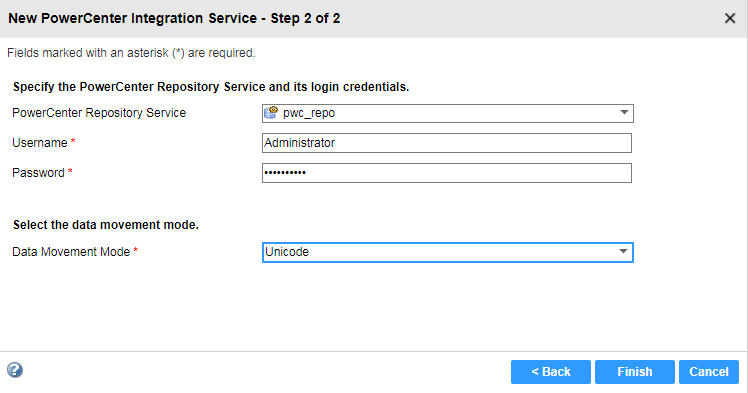
-
在infa server创建developuser
- 在安全页签下，创建一个用户，名为developuser，与Hadoop集群用户保持一致
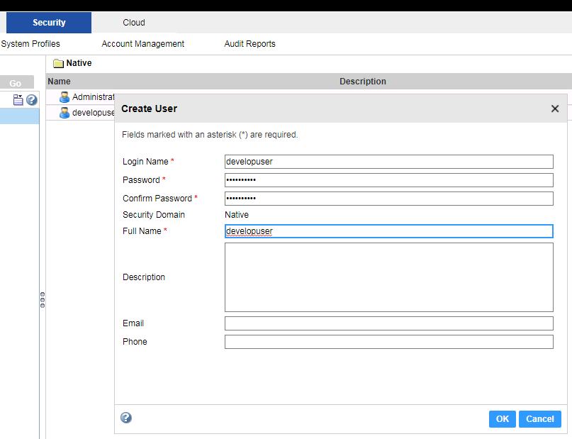
- 修改用户的优先级以及用户组


-
在infa Server 进行Hadoop配置
-
将
/opt目录下的krb5.conf文件复制至/etc目录下以及informatica安装目录${INFA_HOME}java/jre/lib/security/下，并赋予infa用户改文件的读取权限 -
以infa用户登录节点，创建配置文件目录，例如
/opt/pwx-hadoop/conf -
在FusionInsight HD客户端中获取以下配置文件，放至
/opt/pwx-hadoop/conf目录中，并修改文件权限至775
cp /opt/hadoopclient/HDFS/hadoop/etc/hadoop/core-site.xml /opt/pwx-hadoop/conf cp /opt/hadoopclient/HDFS/hadoop/etc/hadoop/hdfs-site.xml /opt/pwx-hadoop/conf cp /opt/hadoopclient/Hive/config/hive-site.xml /opt/pwx-hadoop/conf cp /opt/hadoopclient/Yarn/config/mapred-site.xml /opt/pwx-hadoop/conf chmod -R 775 /opt/pwx-hadoop/conf chown infa:oinstall /opt/pwx-hadoop/conf/*
- 执行以下命令进行Kerberos认证，并指定cache文件，infa用户需要对指定的路径有读写权限
source /opt/hadoopclient/bigdata_env kinit -c /home/infa/krb5cc_developuser developuser chown infa:oinstall /home/infa/krb5cc_developuser- 修改
/opt/pwx-hadoop/conf目录中的core-site.xml文件，添加如下配置
<property> <name>hadoop.security.kerberos.ticket.cache.path</name> <value>home/infa/krb5cc_developuser</value> <description>Path to the Kerberos ticket cache. </description> </property>- 在Administrator 管理界面，为集成服务创建环境变量 CLASSPATH=/opt/pwx-hadoop/conf，并重启集成服务

说明：如果使用FusionInsight HD提供的Hive ODBC驱动连接Hive，需要创建环境变量 LD_PRELOAD=/usr/lib64/libodbchive.so。
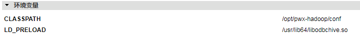
- 删除
/home/infa/Informatica/10.2.0/services/shared/hadoop/hortonworks_2.5/lib/目录下hive相关的jar包，并将/opt/hadoopclient/Hive/Beeline/lib下hive相关的jar包拷贝至该目录，并修改文件权限
rm -f /home/infa/Informatica/10.2.0/services/shared/hadoop/hortonworks_2.5/lib/hive* cp /opt/hadoopclient/Hive/Beeline/lib/hive* /home/infa/Informatica/10.2.0/services/shared/hadoop/hortonworks_2.5/lib chown infa:oinstall /home/infa/Informatica/10.2.0/services/shared/hadoop/hortonworks_2.5/lib/hive* -
PowerCenter Client ~ From Oracle to HDFS/Hive¶
PowerCenter Repository Manager配置¶
-
获取PowerCenter Client安装包，安装时选取PowerCenter Client,启动PowerCenter Repository Manager，选择菜单栏仓库->配置域，配置完成可以看到之前创建的存储库

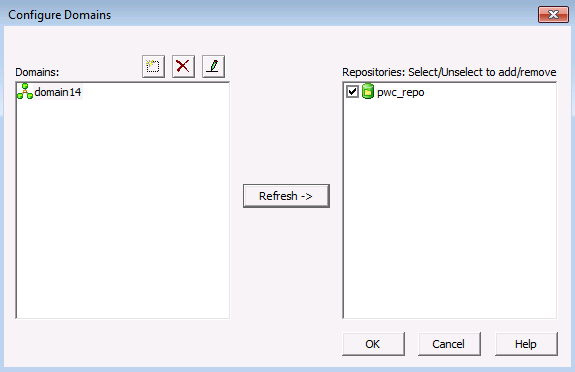
-
双击存储库，输入密码，连接
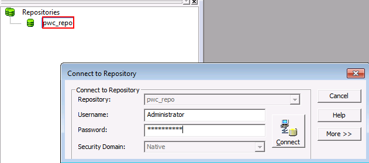
-
选择菜单栏文件夹,创建文件夹
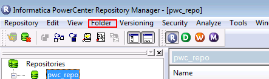

PowerCenter Designer创建mapping¶
-
打开PowerCenter Designer，右键刚才创建的文件夹，点击open，打开配置界面
 - 点击菜单栏Sources->import from databases，在ODBC数据源中创建sitDSN，填写数据库相关信息，测试连接
- 点击菜单栏Sources->import from databases，在ODBC数据源中创建sitDSN，填写数据库相关信息，测试连接

 - 选择刚才创建的数据源，填入数据库用户名密码，连接，可以看到数据库中的表
- 选择刚才创建的数据源，填入数据库用户名密码，连接，可以看到数据库中的表 - 选择target designer，拖入source中的表
- 选择target designer，拖入source中的表 - 双击表，设置数据类型为Flat File
- 双击表，设置数据类型为Flat File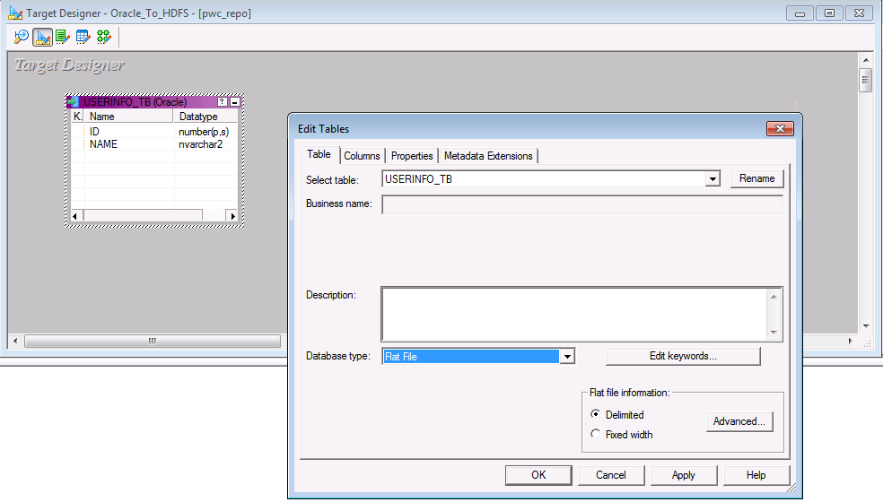
-
在mapping设置页面，创建新的mapping，拖入source和target表，并连线

PowerCenter Workflow Manager运行workflow¶
-
在菜单栏选择task,新建一个task,命名并选择刚才新建的map

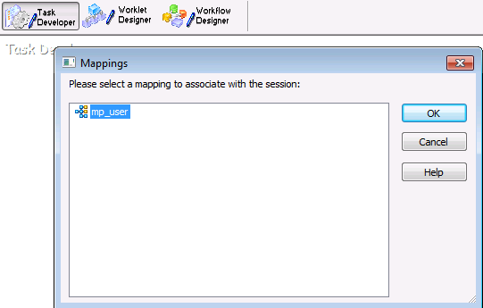
-
新建一个workflow，拖入刚才新建的task，并连线


-
在菜单栏connection中，新建一个application connection,选择Hadoop HDFS Connection

-
具体信息填写如下
HDFS Connection URI：hdfs://namenodeip:25000 Hive URL : jdbc:hive2://172.16.4.21:21066/default;sasl.qop=auth-conf;auth=KERBEROS;principal=hive/hadoop.hadoop.com@HADOOP.COM;user.keytab=/opt/user.keytab;user.principal=developuser Hive User Name: developuser
-
双击刚才创建的task，在mapping选项卡，点击target，设置写入类型为
HDFS Flat Write，并选择连接为刚才创建的connection，并在properties中进行如下配置
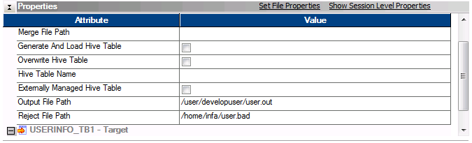
-
保存当前workflow，右键，启动workflow

-
在PowerCenter Workflow Monitor中可以看到任务执行情况

-
在HDFS中可以看到导入的数据

-
在task配置中勾选写入Hive表，填入之前创建的表名，运行workflow

-
在Hive中可以看到表中的数据

PowerCenter Client ~ From Hive to Local¶
使用FusionInsight HD提供的Hive ODBC驱动对接并读取Hive表的数据下载至本地。
安装FusionInsight HD的Hive ODBC驱动¶
-
从https://support.huawei.com/enterprise/zh/cloud-computing/fusioninsight-tool-pid-21624171/software/250981134?idAbsPath=fixnode01%7C7919749%7C7941815%7C19942925%7C21624171下载 FusionInsight_Hive_ODBC_Driver_6.5.1.3.zip。
-
参考产品手册
应用开发指南->安全模式->Hive开发指南->环境准备->配置ODBC样例工程->Linux环境安装Hive ODBC驱动。注意以下几点： -
FusionInsight_Hive_ODBC_Driver_6.5.1.3.zip版本的Hive ODBC不支持TaiShan平台，以及X86平台下的64位Windows操作系统、欧拉操作系统、SuSE 12.x、RedHat 7.x。
-
Hive ODBC安装完之后，需要执行 ldd /usr/lib64/libodbchive.so 确认没有包丢失。

说明：如果ldd命令返回有包丢失，则需要创建对应的符号链接。例如：
ln -s /opt/hadoopclient/JDK/jdk-8u201/jre/lib/amd64/server/libjvm.so /usr/lib64/libjvm.so ln -s /usr/lib64/libssl.so.1.0.2k /usr/lib64/libssl.so.1.0.0 ln -s /usr/lib64/libcrypto.so.1.0.2k /usr/lib64/libcrypto.so.1.0.0 -
/etc/odbc.ini配置示例如下：[hivefi] DRIVER=/usr/lib64/libodbchive.so MODE=1 HOST=172.16.4.181:24002,172.16.4.182:24002,172.16.4.183:24002 PORT=24002 DATABASE=default PRINCIPAL=hive/hadoop.hadoop.com@HADOOP.COM FRAMED=0 NAMESPACE=hiveserver2 KRB5PATH=/opt/krb5.conf JAASPATH=/opt/jaas.conf -
以下三个环境变量在
/etc/profile中设置以便所有用户都能共享。export LD_LIBRARY_PATH=$LD_LIBRARY_PATH:/usr/local/lib:/usr/lib64 export ODBCINI=/etc/odbc.ini export ODBCCLASSPATH=/usr/local/hiveodbc/jars/zookeeper-3.5.1.jar:/usr/local/hiveodbc/jars/slf4j-api-1.7.10.jar:/usr/local/hiveodbc/jars/log4j-1.2.17.jar:/usr/local/hiveodbc/jars/slf4j-log4j12-1.7.5.jar:/usr/local/hiveodbc/jars/zk-helper.jar:/usr/local/hiveodbc/jars/commons-logging-1.2.jar -
使用Informatica提供的调试工具ssgodbc验证连接。
su - infa
kinit developuser
export LD_PRELOAD=/usr/lib64/libodbchive.so
/home/infa/Informatica/10.2.0/tools/debugtools/ssgodbc/linux64/ssgodbc.linux64 -d hivefi -u developuesr -p 'Huawei@123' -v

kinit认证方式配置¶
-
从http://web.mit.edu/kerberos/dist/#kfw-4.0下载对应操作系统架构的MIT Kerberos并安装。
-
设置Kerberos的配置文件。将用户的krb5.conf文件重命名为 krb5.ini 放在
C:\ProgramData\MIT\Kerberos5目录下。 -
设置Kerberos票据的缓存文件
-
在本地创建存放票据的目录，例如
C:\temp。 -
设置Windows的系统环境变量，变量名为
KRB5CCNAME，变量值为C:\temp\krb5cache。
-
在Windows上进行认证
打开MIT Kerberos，单击 get Ticket ，在弹出的MIT Kerberos: Get Ticket窗口中，Pricipal 输入用户名developuser@HADOOP.COM，Password 输入密码，单击 OK。
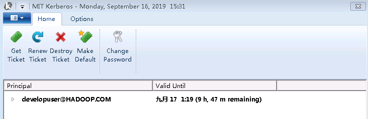
PowerCenter Repository Manager配置¶
- 以管理员身份运行PowerCenter Repository Manager并连接上存储库。选择菜单栏
文件夹->创建新建文件夹 Hive_to_Local。
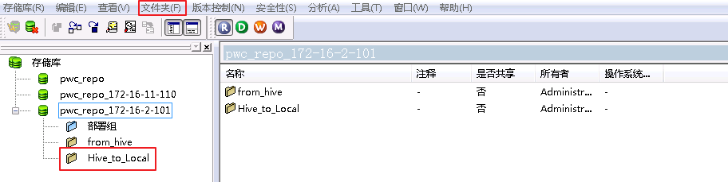
PowerCenter Designer创建mapping¶
- 登录FusionInsight客户端，使用beeline创建Hive表class并插入数据。
CREATE TABLE IF NOT EXISTS class(id INT,name STRING);
INSERT INTO class VALUES (1,'Class1');
INSERT INTO class VALUES (2,'Class2');
INSERT INTO class VALUES (3,'Class3');
- 以管理员身份运行PowerCenter Designer，右键刚才创建的文件夹**Hive_to_Local**，点击open，打开配置界面。点击菜单栏
源->从数据库导入，在ODBC数据源中选择 Sample Cloudera Hive DSN，点击右边的按钮。

-
选择 系统DSN->Sample Cloudera Hive DSN，点击 配置 按钮。 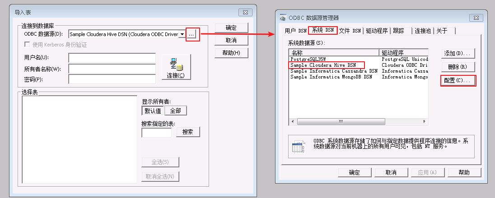
-
配置Hive连接信息如下，点击 Test 按钮，返回连接成功。

- 点击OK或者确定按钮返回
导入表界面，填入用户名：developuser，所有者默认与用户名一致，输入developuser对应的密码，点击 连接 按钮。连接成功后，点击“显示所有者”下面的 全部 按钮，则会返回default数据库。选择default数据库表 class，点击 确定 按钮。
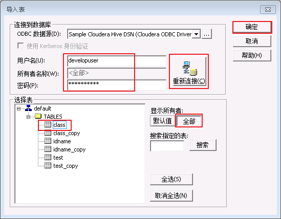
- 在
Hive_to_Local->源->Sample Cloudera Hive DSN下可看到新增的源表class。

- 选择target designer，拖入source中的表class，则在
Hive_to_Local->目标下看到class。
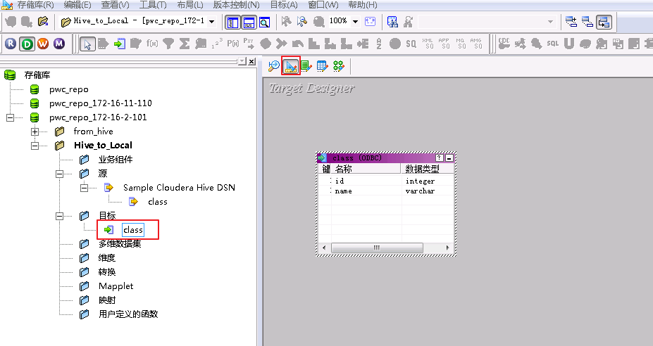
- 双击目标class，设置数据类型为Flat File。
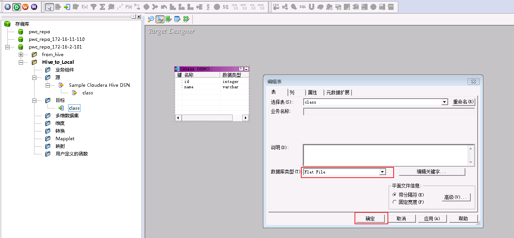
- 点击 mapping designer 图标，点击菜单栏
映射->创建，创建新的映射“mapping_hive_to_local”。
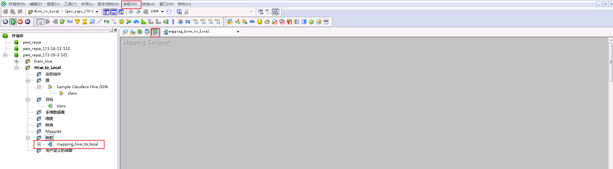
- 将源class和目标class拖入映射“mapping_hive_to_local”中并连线。
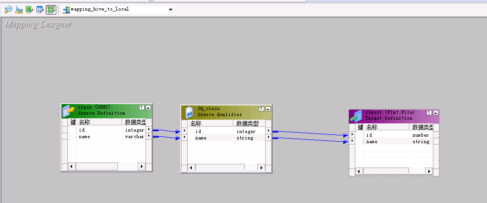
- 双击 SQ_class ，在“属性->Sql Query”中，“ODBC数据源”选择 Sample Cloudera Hive DSN，点击 生成SQL 按钮，然后确定。“Crtl+s”保存mapping。

PowerCenter Workflow Manager运行workflow¶
- 以管理员身份运行PowerCenter Wrokflow，在菜单栏选择“任务->创建”，命名为“session_hive_to_local”，并选择映射“mapping_hive_to_local”，点击 确定。

- 选择菜单栏“连接->关系”，点击 新建，选择 ODBC 后点击 确定。
连接对象定义如下：
名称：hivefi，自定义
用户名：developuser
密码：输入developuser的密码
连接字符串：hivefi，需要和/etc/odbc.ini中设置的名称保持一致
代码页：UTF-8 encoding of Unicode
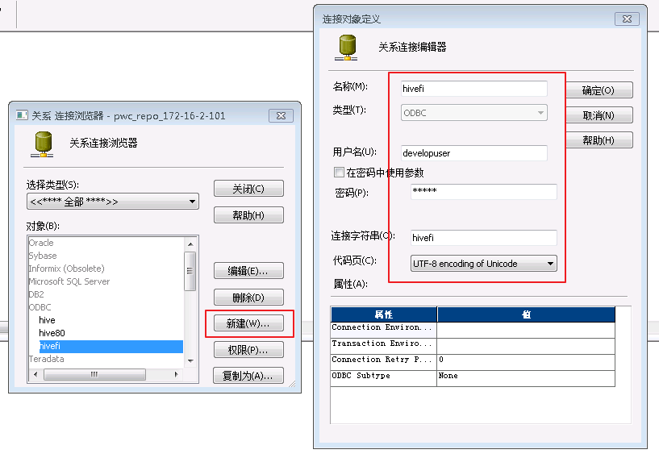
- 在“Task Developer”中双击会话“session_hive_to_local”，点击 映射，设置源SQ_class的连接值为 hivefi，目标class1的属性“Output file directory”为 /home/infa，“Output filename”为 class.out。
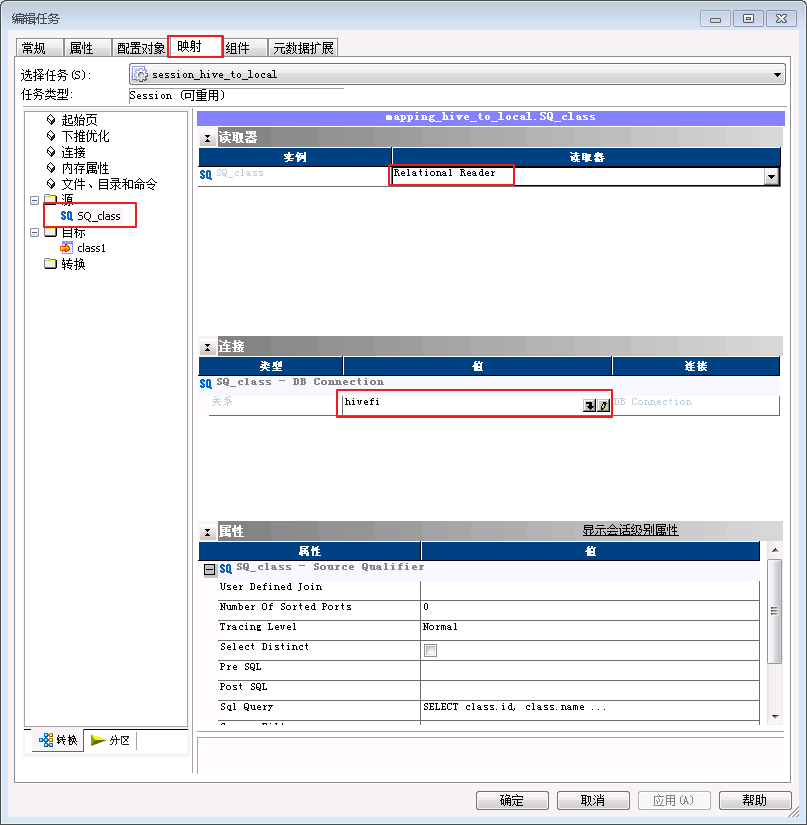
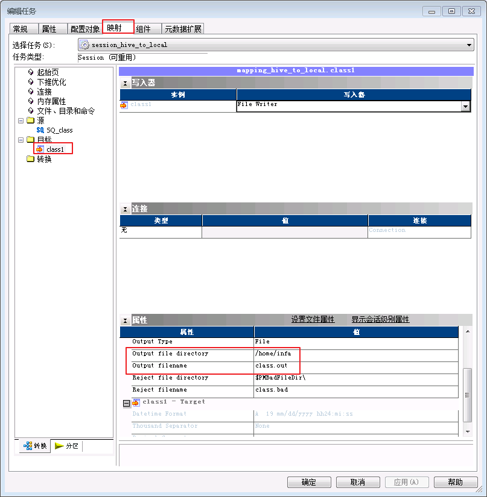
- 点击“Workflow Designer”，选择菜单栏“工作流”，点击 新建，新建一个工作流 wkf_hive_to_local，拖入会话“session_hive_to_local”，并与“启动”连线。

-
“Ctrl+s”保存“wkf_hive_to_local”，右键“wkf_hive_to_local”选择 启动工作流。
-
在PowerCenter Workflow Monitor中可以看到任务执行成功。
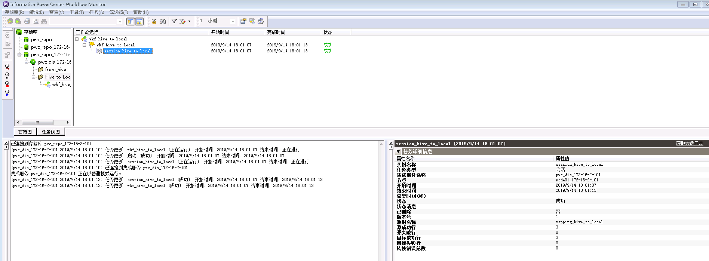
- 登录Informatica安装节点查看从Hive表获取的数据存储于
/home/infa/class.out。